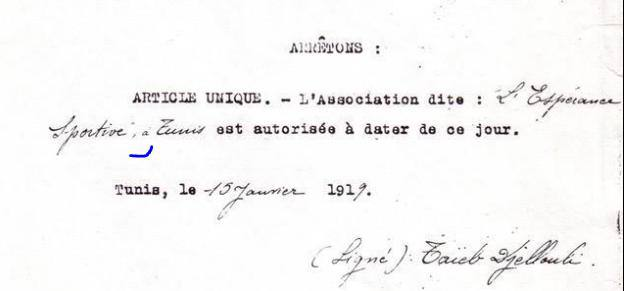
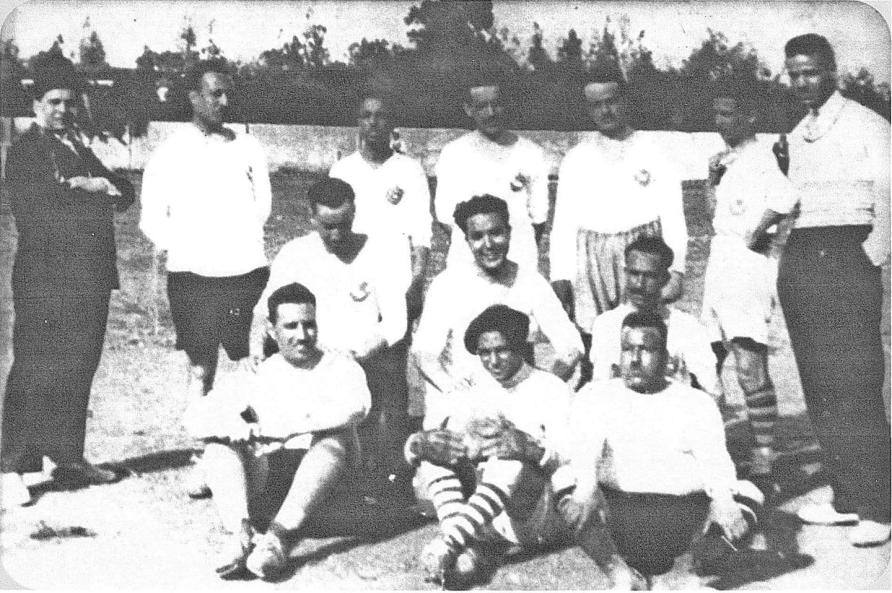
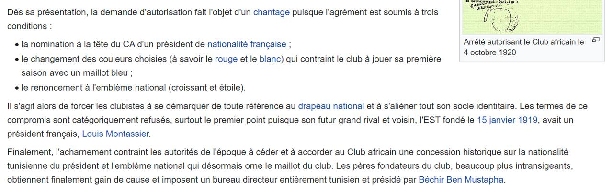
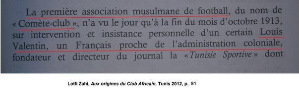
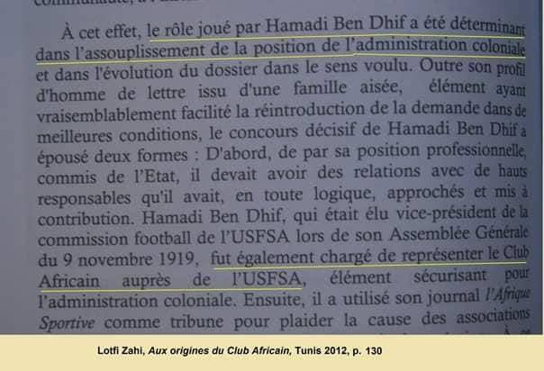
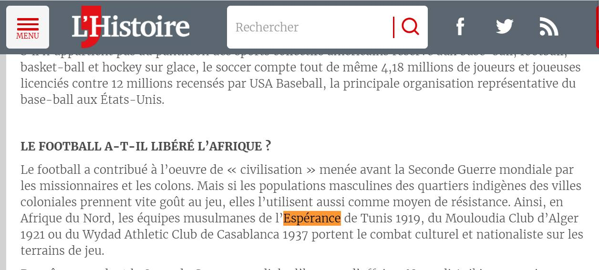
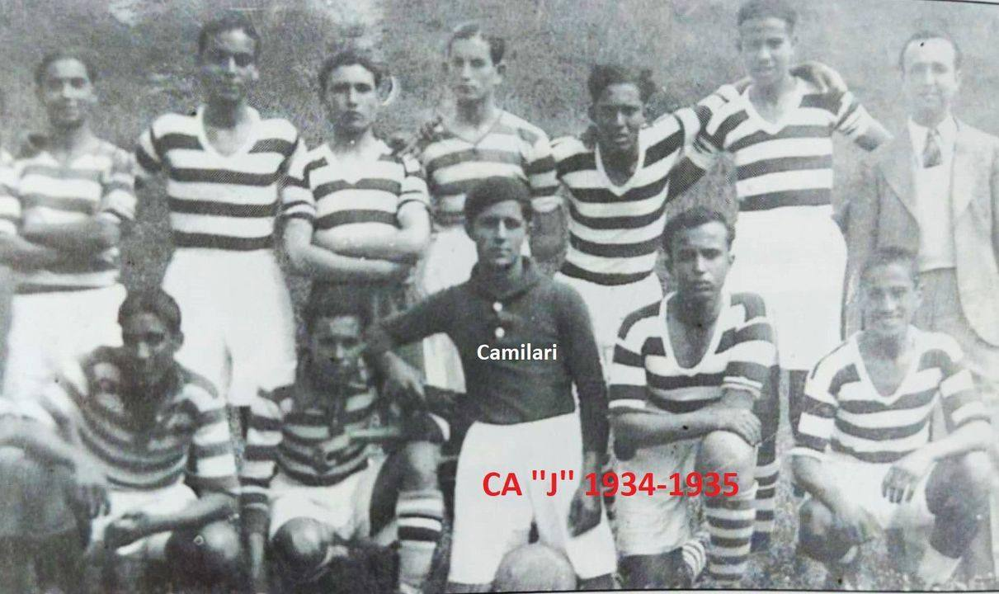

الأكاذيب، واحدةً تلو الأخرى.
لكل تهمة موجّهة إلى الترجي ملفّها: ما يُروى، وما تُظهره الأرشيفات، والوثائق التي تتيح لكل قارئ أن يتحقق بنفسه.
التهم، مفنَّدة
كثيرون هم الذين حاولوا على مرّ السنين تشويه صورة الترجي، وبلغ الأمر ببعضهم — وتمسّكوا جيدًا — حدّ وصفه بأنه نادٍ فرنسي (كذا).
تهمة سخيفة بقدر ما هي باطلة، لا تترك مجالًا للشك ولا للتفصيل. مغالطة تستدعي الردّ. لا بالعاطفة، بل بالوقائع والأدلة وذاكرة الأرشيف.
لذلك اخترنا أن نردّ، بمنهجية وعمق. نقطةً نقطة. دون مبالغة، ولكن دون تنازل.
تمسّكوا جيدًا: فالقائمة طويلة. قد تُثير الابتسام أحيانًا، والتنهّد في أحيان كثيرة… لكنها قبل كل شيء تكشف واقعًا مُقلقًا، حلّ فيه التقريب في أحيان كثيرة محلّ التاريخ.

خطأهل الترخيص الذي وقّعه الجلولي مزوَّر؟قراءة متأنية في التأشيرة الرسمية لسنة 1919: ما الذي كُتب فيها فعلًا.وثيقة واحدة
خطأهل كانت الألوان الأولى للترجي غير الأخضر والأبيض؟ألوان الكنيسة وألوان النادي: ما تقوله صور تلك الحقبة.وثيقة واحدة
خطأالترجي، نادٍ « فرنسي »؟الـUSFSA والتراخيص والإطار المفروض على جميع الأندية في عهد الحماية.7 وثائق خطأالإفريقي، حامل لواء الحركة الوطنية؟الحركة الوطنية والحركة الثقافية: الوقائع، تاريخًا بتاريخ.3 وثائق
خطأالإفريقي، حامل لواء الحركة الوطنية؟الحركة الوطنية والحركة الثقافية: الوقائع، تاريخًا بتاريخ.3 وثائق
السياق المنسيّ
للردّ على التهم، لا بدّ أولًا من التذكير بإطار تلك الحقبة: الأندية الإسلامية الأولى، والجامعة الفرنسية، والرجال الذين أطلقوا على الأندية أسماءها.
 سياق«المسلمة» (La Musulmane، 1906) والاسم « الإسلامي »أول نادٍ إسلامي في تونس والجدل حول الأسماء.وثيقة واحدة
سياق«المسلمة» (La Musulmane، 1906) والاسم « الإسلامي »أول نادٍ إسلامي في تونس والجدل حول الأسماء.وثيقة واحدة
سياق«المذنَّب» (La Comète، 1913) والجامعة الفرنسيةمَن الذي أتاح فعلًا ميلاد الأندية التونسية الأولى.6 وثائق
سياقحمادي بن ضيف واسم النادي الإفريقي«إفريقيا الرياضية» و«إفريقيا الفرنسية» وأصل اسم.16 وثيقة
التحقيق المضادّ
قبل التطرق إلى نقاط أكثر حسمًا، يحسن بنا أن نتوقف قليلًا.
أمام الشائعات الباطلة التي لا تُحصى — والتي تكرّرت حتى تحوّلت، لدى البعض، إلى "حقائق" مسلَّم بها — تجد Taraji Archives نفسها مضطرة إلى الردّ. لا بتحريف الوقائع ولا بالهجوم المضادّ عبر المبالغة، بل بإعادة الحقيقة في أكثر صورها تجرّدًا وتوثيقًا.
ف الوثيقة — أي إن الثقة في الدليل.
وكما يذكّر بذلك شعار صفحتنا على فيسبوك: الثقة
قبل الدخول في صلب الموضوع، لنتقاسم بعض المقتطفات من مؤلفات كتبها مؤرخون أجانب وموضوعيون، يتناولون الترجي الرياضي التونسي بصرامة وتجرّد ووضوح.
كتاب «كرة القدم وإفريقيا» (Le football et l’Afrique) لبول ديتشي ودافيد كلود كيمو كيمبو:
هذا الكتاب، الذي ألّفه المؤرخان المذكوران أعلاه، موّلته: الفيفا.
وهذا مقطع (الصفحة 81) يتحدث عن كرة القدم في تونس (دون أي تشهير…):
«في تونس، أصبح الترجي الرياضي، الذي تأسس في 15 جانفي 1919 في حيّ شعبي من أحياء تونس، وهو أول نادٍ إسلامي في عهد الحماية، خلال فترة ما بين الحربين حامل لواء الحركة الوطنية، لا سيما خلال مواجهاته مع الملعب الغالي أو الاتحاد الرياضي التونسي المؤلف من اليهود. وبينما كان يثير حماسة شعبية كبيرة، لم تكفّ السلطات الفرنسية عن كبح نشاط النادي، في حين أصبح الحبيب بورقيبة، زعيم الحزب الوطني، الحزب الحر الدستوري الجديد، وأبو الاستقلال التونسي، أشهر مشجعيه، بعد أن كان نائبًا للرئيس سنة 1931. » « En Tunisie, l’Espérance Sportive, fondée le 15 Janvier 1919 dans un quartier populaire de Tunis et premier club musulman du protectorat, était devenue dans l’entre –deux guerres le porte-drapeau du nationalisme, notamment lors de la confrontation avec les Stade Gaulois ou l’Union Sportive Tunisienne composée de Juifs. Alors qu’il suscitait une grande ferveur populaire, les autorités Françaises n’eurent de cesse de freiner l’activité du club pendant qu’Habib Bourguiba, leader du Parti Nationaliste du Néo Destour et père de l’indépendance Tunisienne est devenu le supporter le plus célèbre, après avoir été Vice-Président en 1931. »
يُبرز هذا المقطع الدور المحوري للترجي في المجتمع التونسي آنذاك. فقد تأسس في حيّ شعبي، وكان أول نادٍ إسلامي في عهد الحماية، وأثار حماسة شعبية كبيرة. وحاولت السلطات الفرنسية كبح نشاطه، في حين أصبح الحبيب بورقيبة، زعيم الحزب الوطني، الحزب الحر الدستوري الجديد، والرئيس اللاحق لتونس المستقلة، من أشدّ مشجعيه حماسة، بعد أن كان نائبًا لرئيسه سنة 1931.
تؤكد هذه العناصر أهمية الترجي الرياضي التونسي في النسيج الاجتماعي والسياسي التونسي آنذاك، دون أن تصفه صراحةً بأنه "حامل لواء الحركة الوطنية"

تحقيق مضادّما كانت تنشره مجلة « التاريخ » (L'Histoire)مصدرٌ يُستشهد به دفاعًا، أُعيدت قراءته كاملًا.وثيقة واحدة تحقيق مضادّالترجي والأجانب قبل الاستقلالودعم الترجي لفريق جبهة التحرير الوطني الجزائرية.11 وثيقة
تحقيق مضادّالترجي والأجانب قبل الاستقلالودعم الترجي لفريق جبهة التحرير الوطني الجزائرية.11 وثيقة
تحقيق مضادّأجانب بقميص النادي الإفريقيحرّاس مرمى، و« أساطير »، ودربي التأكيد (2-1).10 وثائق